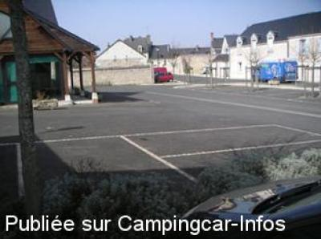

APN = Parking toléré jour/nuit de :
PONTLEVOY
(N° 544)
Accès/adresse :
Rue Marcel Thenot D764
41400 PONTLEVOY
41400 PONTLEVOY
Latitude : (Nord) 47.3875° Décimaux ou 47° 23′ 15′′
Longitude : (Est) 1.25456° Décimaux ou 1° 15′ 16′′
Tarif : Gratuit
Services :


Autres informations :
Autre parking place de la Saulaie

Le 17/03/2004 par F. Pothier
de
balibalo
le 25/04/2016 :
je confirme place du champs de foire bien plus calme
je crois qu une aire est en train se cree a ponttlevoy a suivre
je confirme place du champs de foire bien plus calme
je crois qu une aire est en train se cree a ponttlevoy a suivre
de
jami26
le 07/09/2013 :
Arrivés par hasard à Pontlevoy le 20 août 2013, nous avons dormi sur la Place du Champ de Foire : nuit très calme.
Arrivés par hasard à Pontlevoy le 20 août 2013, nous avons dormi sur la Place du Champ de Foire : nuit très calme.
de
CARTE Bernard.
le 02/07/2013 :
Nous avons passé la nuit du 27 au 28 juin 2013 sur la place de la Saulaie.Rien à dire jusqu'à 7 h du matin mais après pas mal de circulation sur la route de Contres toute proche.Le stationnement place du champ de foire me semble plus indiqué si on recherche le calme
Nous avons passé la nuit du 27 au 28 juin 2013 sur la place de la Saulaie.Rien à dire jusqu'à 7 h du matin mais après pas mal de circulation sur la route de Contres toute proche.Le stationnement place du champ de foire me semble plus indiqué si on recherche le calme
de
françois*77
le 21/05/2013 :
Bonjour, Je confirme le dernier commentaire du 24/07/2004. En effet le parking est d'un calme ! ! ! Il se situe à 200m d'une boulangerie ou l'on peut prendre son petit déj et d'une pizzéria "O péché mignon" ou l'accueil (samedi 18/05/13) des patrons est super. On peut s'y restaurer (c'est excellent) sur place ou commander pour emporter.Si l'occasion se présente, nous y retournerons surement.
Bonjour, Je confirme le dernier commentaire du 24/07/2004. En effet le parking est d'un calme ! ! ! Il se situe à 200m d'une boulangerie ou l'on peut prendre son petit déj et d'une pizzéria "O péché mignon" ou l'accueil (samedi 18/05/13) des patrons est super. On peut s'y restaurer (c'est excellent) sur place ou commander pour emporter.Si l'occasion se présente, nous y retournerons surement.
de
F. Pothier
le 17/03/2004 :
La meilleure place n'est pas celle indiquée ci-dessus (qui certes est déjà un excellent endroit), mais celle dont vous pouvez voire la photo du 17/03/2004. Il s'agit de la place de la Saulaie. Vous y trouverez, à disposition, un bloc sanitaire récent et bien entretenu.
Attention! Marché le jeudi matin (placez-vous alors derrière le parterre de lavande.
En venant de Blois, laissez sur votre gauche la route de Thenay-Contres, pour prendre immédiatement celle qui suit 100 mètres plus loin (à gauche), vous y êtes.
La meilleure place n'est pas celle indiquée ci-dessus (qui certes est déjà un excellent endroit), mais celle dont vous pouvez voire la photo du 17/03/2004. Il s'agit de la place de la Saulaie. Vous y trouverez, à disposition, un bloc sanitaire récent et bien entretenu.
Attention! Marché le jeudi matin (placez-vous alors derrière le parterre de lavande.
En venant de Blois, laissez sur votre gauche la route de Thenay-Contres, pour prendre immédiatement celle qui suit 100 mètres plus loin (à gauche), vous y êtes.